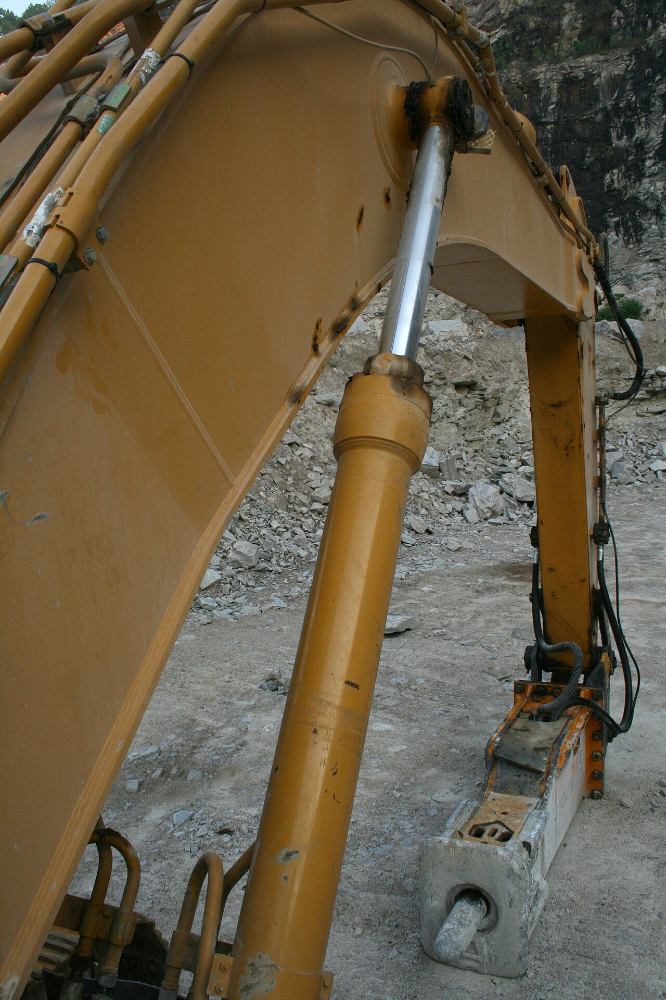
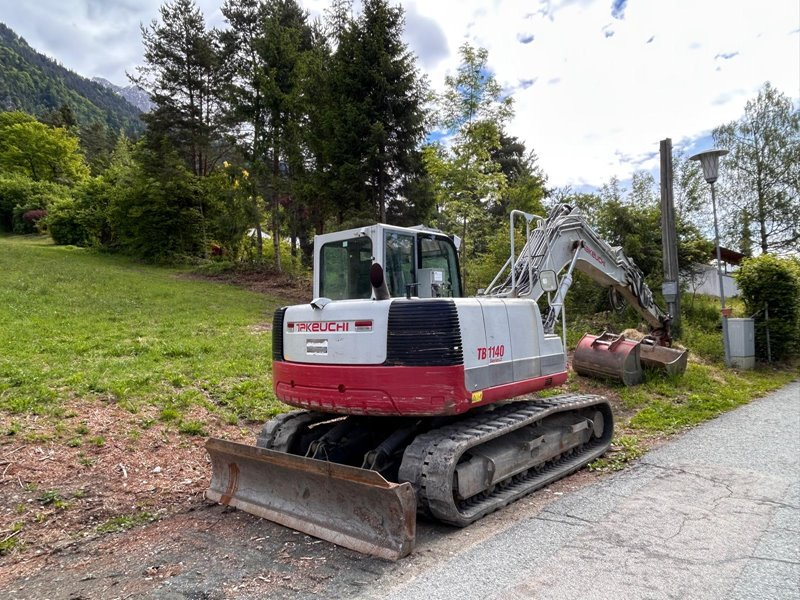
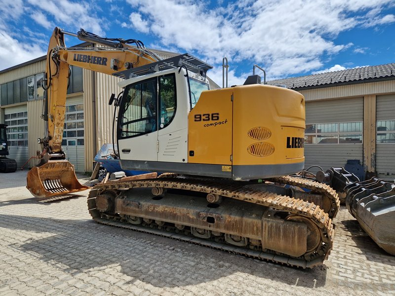
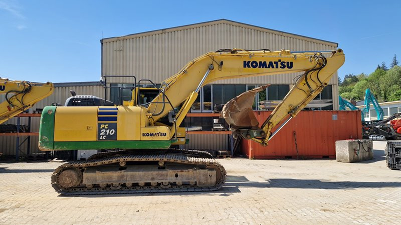

Der Baggerspezialist aus Wien.
Kobelco Bagger und NPK Hydraulik-Anbaugeräte aus einer Hand — mit Verkauf, Service und Ersatzteilen für den österreichischen Tief- und Abbruchbau. Persönlich beraten von Leuten, die Maschinen verstehen.
Zwei Welten,
ein Anspruch.
Tragkraft trifft Schlagkraft. Wir kombinieren Kobelco Bagger mit NPK Anbaugeräten zu Lösungen, die auf österreichischen Baustellen zuverlässig liefern.
 01 / KOBELCO
SK-Serie · Kurzheck · 1–80 t
01 / KOBELCO
SK-Serie · Kurzheck · 1–80 t
Kobelco Bagger
Vom kompakten Minibagger bis zur Großmaschine. Generation-10 mit iNDr-Kühlung, niedrigem Verbrauch und der Kurzheck-Bauweise für beengte Baustellen.

02 / NPK Hydraulikhammer · Greifer · PulverisiererNPK Anbaugeräte
Hydraulikhämmer, Sortiergreifer, Pulverisierer und Verdichter. Robuste US-Technik für Abbruch, Recycling und Erdbau — passgenau auf Ihren Träger abgestimmt.
 SERVICE / WERKSTATT
SERVICE / WERKSTATT
Stillstand kostet.
Wir halten Sie im Lauf.
Werkstattservice in Wien, mobile Einsätze in ganz Ostösterreich und ein Ersatzteillager, das die häufigsten Verschleißteile sofort liefert.
- Wartung & Reparatur für Kobelco und NPK
- Original-Ersatzteile ab Lager Wien
- Mobiler Service direkt auf der Baustelle
Sofort verfügbar.
Geprüft übergeben.
Geprüfte Gebrauchtbagger mit dokumentierter Historie — die wirtschaftliche Alternative zur Neumaschine. Eine Auswahl aus dem laufenden Bestand.

Kettenbagger · 15 t 59.500 €Takeuchi TB1140
Gummikette, Zentralschmieranlage, hydraulischer Schnellwechsler auf Powertilt, 3 Tieflöffel und 1 Böschungslöffel.

Kurzheck · 35 t 105.000 €Liebherr R936 Compact
Kurzheckbagger mit kompletter hydraulischer Verrohrung, Dachschutzgitter, hydraulischem Schnellwechsler und Gitterlöffel.

Kettenbagger · 22,5 t 33.000 €Komatsu PC210LC-10
Komplette hydraulische Verrohrung, hydraulischer Schnellwechsler BMT SW2 und Tieflöffel. Wirtschaftlicher Allrounder.
 WIEN / 1230 · SEIT 1981
WIEN / 1230 · SEIT 1981
Familienbetrieb.
Industrieller Anspruch.
Seit 1981 stattet Kohlschein österreichische Bauunternehmen mit Maschinen aus, die halten. Drei Generationen Erfahrung, kurze Wege, ehrliche Beratung — und der Anspruch, jede Maschine so zu übergeben, als würden wir selbst damit graben.
Reden wir über
Ihre Baustelle.
Persönliche Beratung zu Bagger, Anbaugerät und Service — meist noch am selben Tag.